Software architecture is NOT about:
- Communication
- High-level structure
- Algorithms
- Nonfunctional requirements
Show answer
C. Algorithms — Algorithms are low-level detail handled in detailed or construction design.
This lecture gives the formal definition of software architecture and then takes it apart phrase by phrase: architecture is foundational, it translates requirements into design elements, it needs a collection of diagrams rather than one, it describes major components together with the quality they provide, and it must support detailed design and construction. The second half lists the architect’s key tasks: identifying stakeholder concerns (and the tactics that satisfy them), choosing views, styles and patterns, defining components and interfaces, evaluating the architecture, and keeping the code in sync with the design.
Which major parts exist, how they fit and communicate, and what quality each provides. It is not about algorithms or data structures.
Non-functional requirements are decided at architecture time; a tactic is the design decision that achieves one.
No single diagram can show usability, performance and deployment at once, so architecture is a collection of views for different stakeholders.
How closely the built system matches its design. It drops quickly unless changes are documented, reviewed and approved.
Final 252 Q2 (5 marks) asked for the formal definition with three of its parts explained, and for five key tasks of architectural design. Midterm 252 Q1 drew four MCQs from this lecture (architecture is not about algorithms, why it is foundational, why several views are needed, design synchronicity), Midterm 261 Q1 asked for the four key tasks among distractors, and Quiz 1 261 asked about tactics and the architecture level.
Every original slide is shown unchanged. Yellow marks on a slide point to a numbered note: hover or tap a mark to jump to its note, and hover a note to see its marks. Questions tagged Past exam appeared on a real paper; Prediction questions are likely angles, not confirmed.
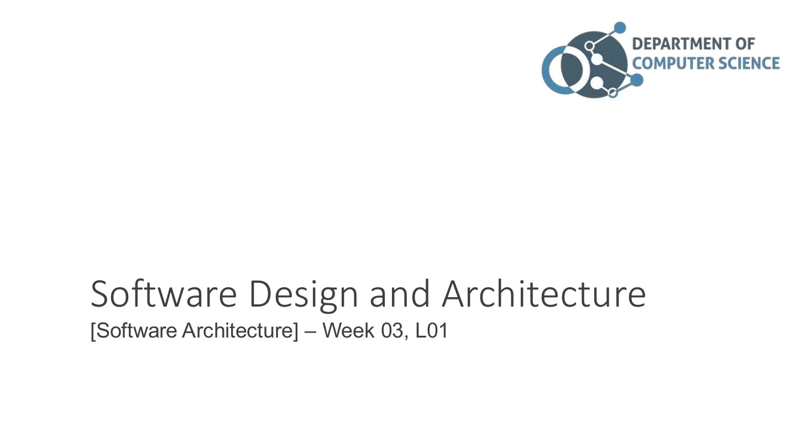
Week 3, first architecture lecture. Chapter 1 named architecture as the first major design activity; this lecture defines it formally and lists what an architect actually does.
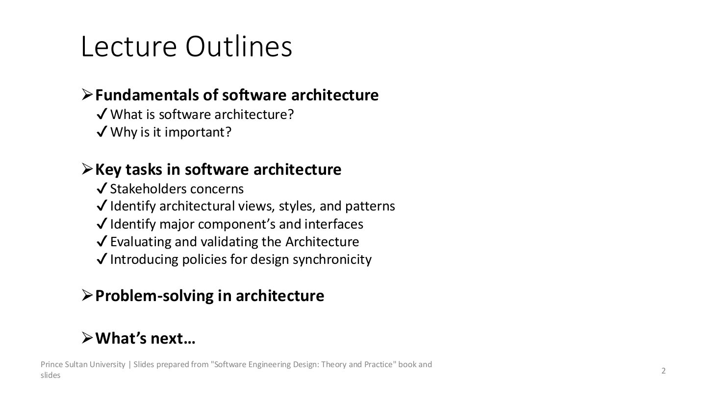
First half: the fundamentals, meaning what architecture is and why it matters.
Second half: the key tasks, from identifying stakeholder concerns to keeping the implementation in sync with the design. Final 252 asked you to list five of them.
It closes by applying Chapter 1’s problem-solving framework to architecture.
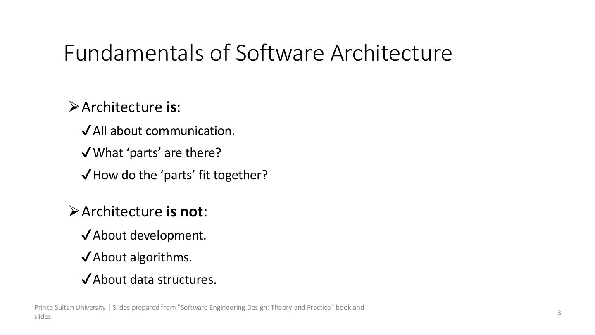
Architecture is first a communication tool: it gives every stakeholder (developers, managers, clients, operators) one shared picture of the system to discuss and decide on.
Its two questions are what parts exist and how they fit together: the major components and the connections between them.
It is not about development details, algorithms or data structures. Those belong to detailed and construction design. A diagram that shows sorting logic is no longer an architecture diagram.
Software architecture is NOT about:
C. Algorithms — Algorithms are low-level detail handled in detailed or construction design.
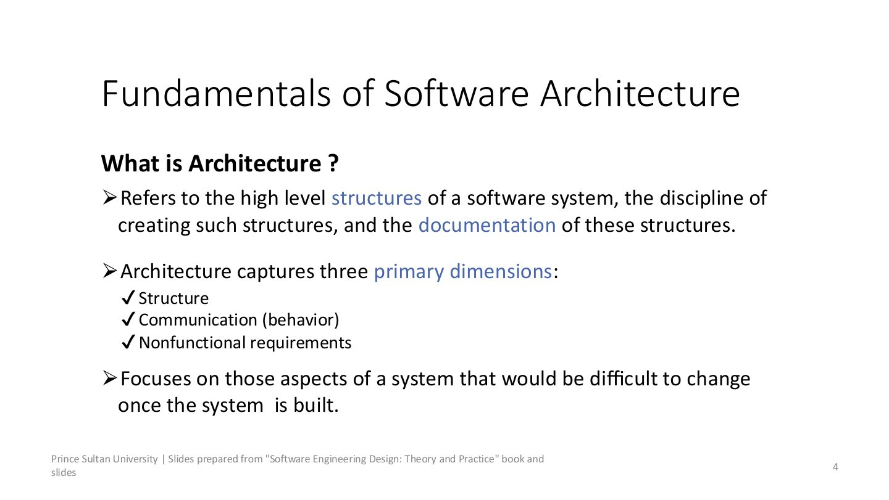
“Architecture” has three meanings at once: the high-level structures of a system, the discipline of creating them, and the documentation that records them.
It captures three dimensions: structure (the parts), communication or behaviour (how the parts interact at run time), and non-functional requirements (the qualities the system must have: performance, security, availability…).
It focuses on the decisions that would be difficult to change once the system is built: the choice of components, how they talk, where data lives. That is why these decisions are made first and with care.
Which is NOT one of the three primary dimensions captured by software architecture?
A. Coding style
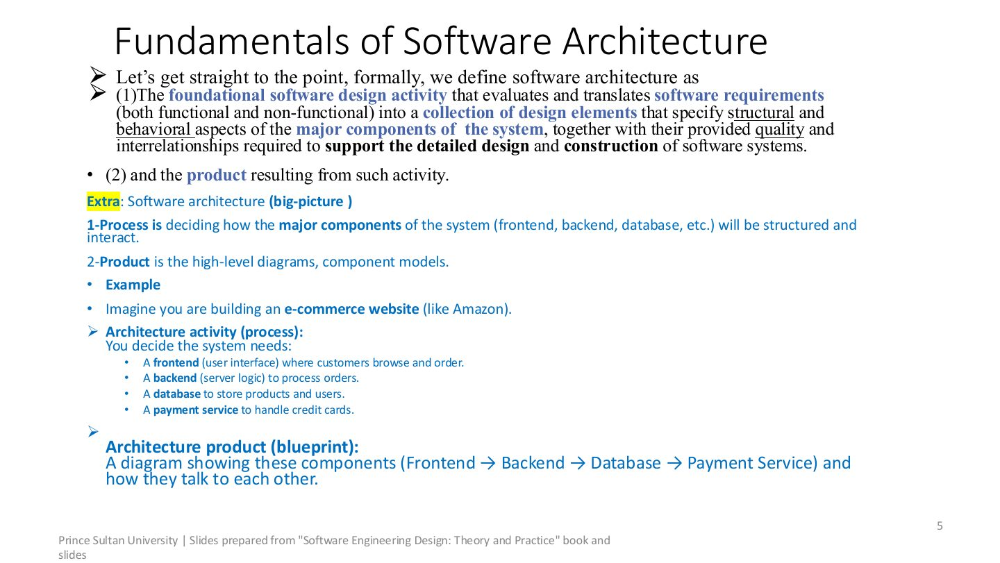
The formal definition, part (1): architecture is the foundational software design activity. It comes first and everything else is built on it.
It evaluates and translates the software requirements, both functional and non-functional, into design.
The output is a collection of design elements (diagrams) specifying the structural and behavioural aspects…
…of the major components of the system, together with the quality they provide and their interrelationships.
All of this exists to support detailed design and construction: it is an input to the next phases, not an end in itself.
Part (2): architecture is also the product of that activity, the high-level diagrams and component models (the same process/product split as Chapter 1).
The e-commerce example: the process decides that the system needs a frontend, a backend, a database and a payment service; the product is the diagram Frontend → Backend → Database → Payment Service showing how they talk.
Define the formal software architecture and then pick any three major parts of the definition and explain them.
Definition: software architecture is the foundational design activity that evaluates and translates software requirements (functional and non-functional) into a collection of design elements that specify the structure and behaviour of the major components of the system, with their provided quality and interrelationships, to support detailed design and construction; and the product of that activity. Three parts: Foundational: it is not optional; it is forward engineering where designing for quality begins. Translates requirements: textual requirements become graphical design elements, so they can be traced through the life cycle. Collection of design elements: no single diagram can describe a system, so several views are needed. (Also acceptable: major components with their quality; supports detailed design and construction.)
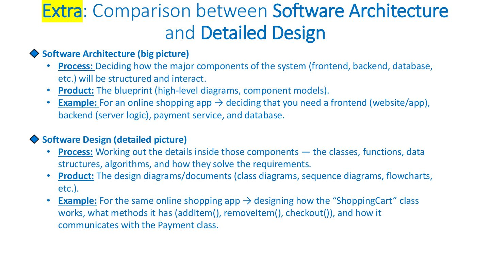
Architecture (big picture). Process: deciding how the major components (frontend, backend, database…) are structured and interact. Product: the blueprint of high-level diagrams and component models.
Detailed design (detailed picture). Process: working out what is inside those components (classes, functions, data structures, algorithms). Product: class diagrams, sequence diagrams, flowcharts. For the same shop, it designs the ShoppingCart class with addItem(), removeItem(), checkout() and how it calls the Payment class.
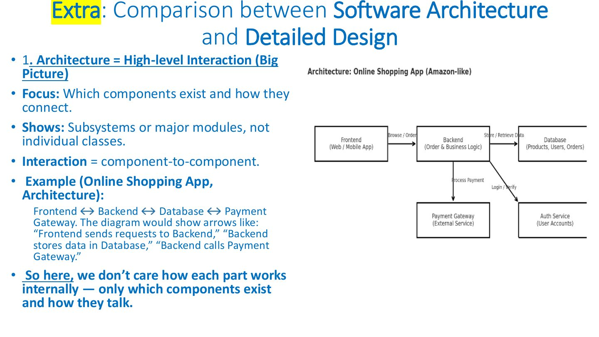
Architecture is about high-level interaction: which components exist and how they connect. It shows subsystems or major modules, never individual classes.
The interaction it shows is component-to-component: “Frontend sends requests to Backend”, “Backend stores data in Database”, “Backend calls Payment Gateway”.
At this level we deliberately don’t care how each part works inside. Only which parts exist and how they talk.
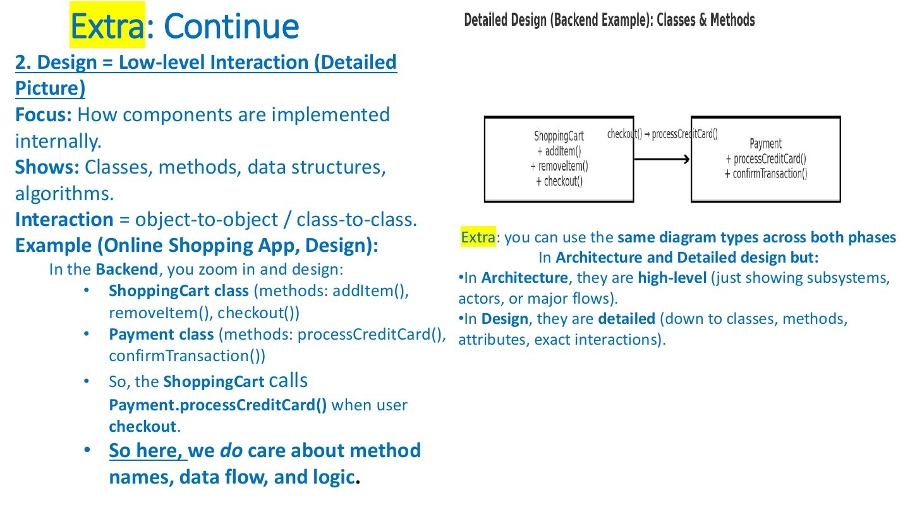
Detailed design is about low-level interaction: how components are implemented inside, shown as classes, methods, data structures and algorithms.
The interaction is now object-to-object or class-to-class.
Zooming into the backend: a ShoppingCart class (addItem(), removeItem(), checkout()) and a Payment class (processCreditCard(), confirmTransaction()). At checkout, ShoppingCart calls Payment.processCreditCard(). Here method names, data flow and logic matter.
You can use the same diagram types in both phases (a sequence diagram, for instance). The difference is the level: in architecture they show subsystems, actors and major flows; in design they go down to classes, methods and attributes.
Give one example of an architecture-level interaction and one of a detailed-design interaction for an online shop.
Architecture: “the Backend calls the Payment Gateway” (component to component). Detailed design: “ShoppingCart.checkout() calls Payment.processCreditCard()” (object to object, with method names).
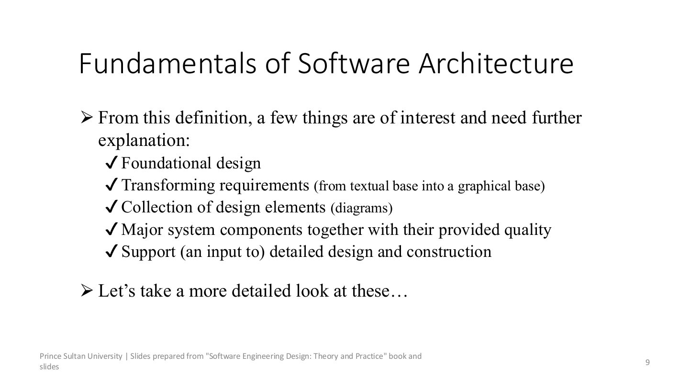
Slide 10 explains foundational design.
Slide 11: transforming requirements from a textual form into a graphical one.
Slide 12: a collection of design elements (diagrams), not one.
Slides 13–14: major components together with their provided quality.
Slide 15: architecture supports (is an input to) detailed design and construction. These five phrases are exactly what Final 252 Q2-1 asked you to explain (any three).
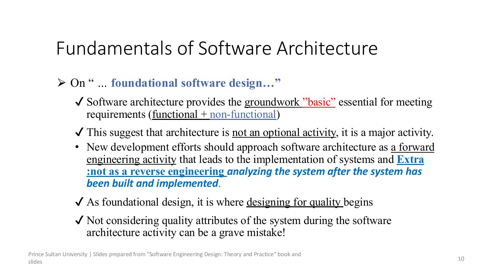
Foundational means architecture provides the groundwork for meeting the requirements, both functional and non-functional. Without it, there is nothing for the rest of the design to stand on.
So architecture is not optional: it is a major activity in every new development effort.
It should be forward engineering: done first, leading to the implementation. The opposite, reverse engineering, analyses a system after it has been built to recover its architecture. That is useful for old systems, but it is not how a new one should be designed.
Because it is foundational, architecture is where designing for quality begins. Ignoring quality attributes here is a grave mistake: performance or security that the structure doesn’t support is very hard to add later.
Which statement best explains why software architecture is considered a foundational design activity?
C. It establishes the groundwork for satisfying functional and non-functional requirements — Option b describes reverse engineering, which the slide says architecture should not be.
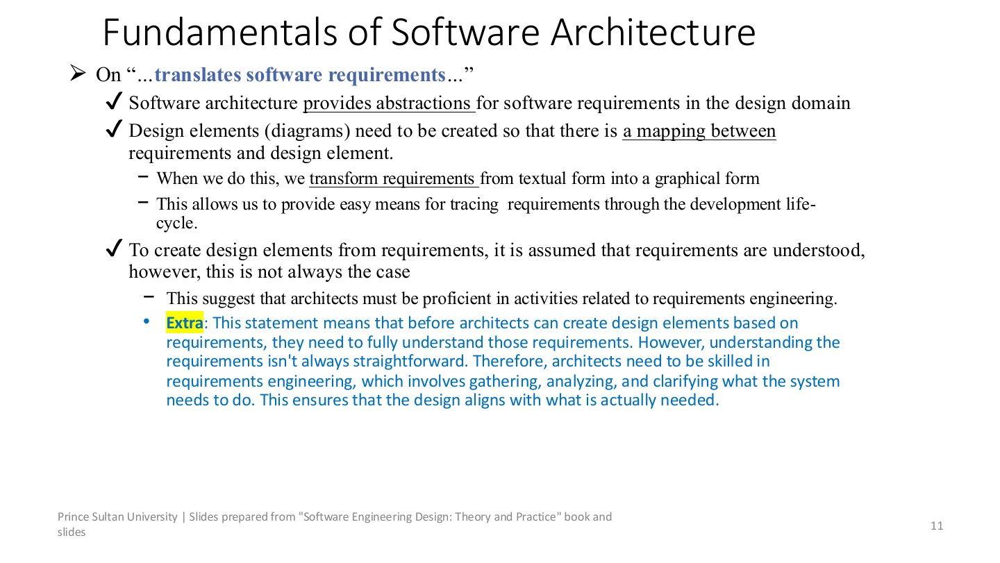
Architecture provides abstractions of the requirements in the design domain: each requirement is mapped to design elements (components, connectors) that will satisfy it.
That mapping turns requirements from text into diagrams, and it makes requirements traceable: for any requirement you can point to the components that implement it, and follow it through to code and tests.
The mapping assumes the requirements are understood, which is often not the case. Architects therefore need to be good at requirements engineering: gathering, analysing and clarifying what the system must do. Chapter 2 Lecture 2 covers this.
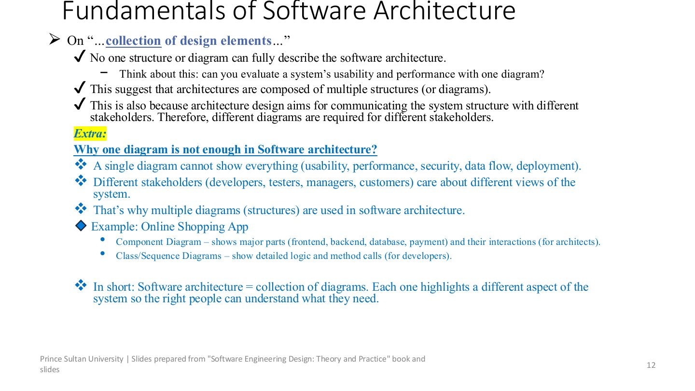
No single structure or diagram can describe a whole architecture. Try judging both usability and performance from one picture: a screen-flow diagram says nothing about load, a deployment diagram says nothing about ease of use.
So an architecture is made of multiple structures (diagrams), each highlighting one aspect.
The second reason is communication: architecture serves stakeholders with different backgrounds and questions, so different diagrams are needed for different stakeholders.
Online shop example: a component diagram of frontend, backend, database and payment for architects; class and sequence diagrams of method calls for developers. Together they describe one system.
Why are multiple architectural views required in complex systems?
B. Because no single view can represent all system aspects for all stakeholders
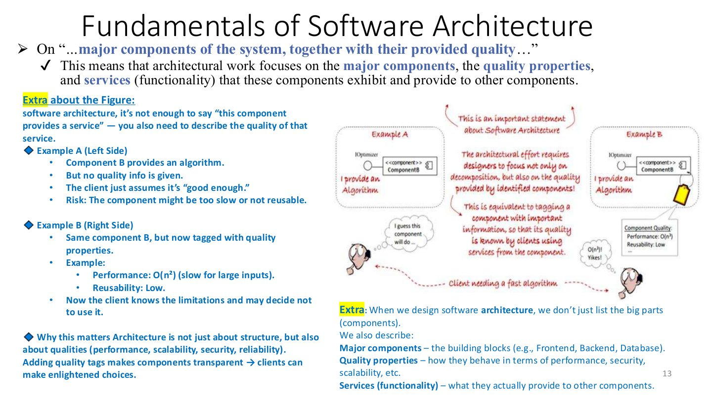
Architecture records three things about each major component: the component itself, the services (functionality) it provides to others, and the quality properties of those services.
Example A (left): component B provides an algorithm, but nothing is said about its quality. The client just assumes it is “good enough”, and may discover too late that it is too slow or can’t be reused.
Example B (right): the same component tagged with its qualities, e.g. performance O(n²) (slow for large inputs) and low reusability. Now the client knows the limits and can decide whether to use it. Quality tags make components transparent and choices informed.
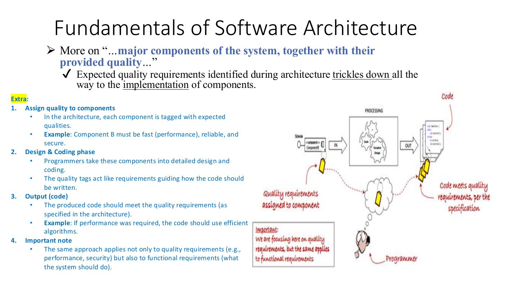
Quality requirements identified at architecture time trickle down all the way to the implementation of the components.
Step 1: in the architecture, each component is tagged with its expected qualities (component B must be fast, reliable and secure).
Steps 2–3: programmers take each component into detailed design and code, using the quality tags as requirements. If performance was required, the code must use efficient algorithms.
The same flow applies to functional requirements: what a component must do also passes from the architecture down to the code.
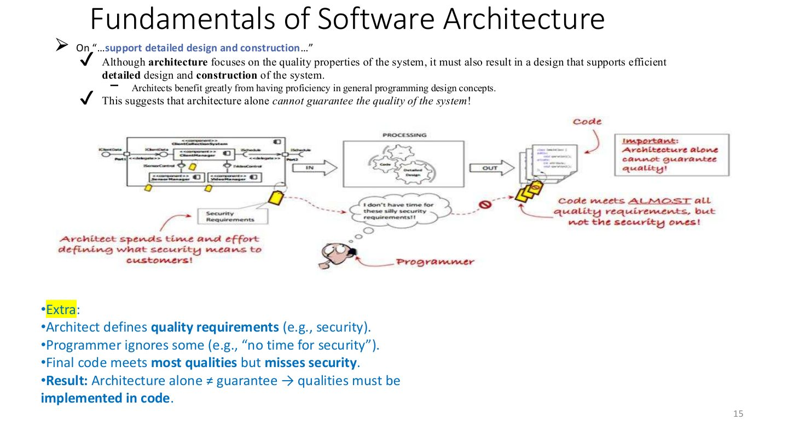
Architecture focuses on quality, but it must also produce a design that supports efficient detailed design and construction. A structure that is elegant on paper but awkward to implement fails this test.
That is why architects benefit from knowing programming and design concepts well: they must foresee how their components will be built.
And architecture alone cannot guarantee quality. Example: the architect requires security, a programmer skips it for lack of time, and the final code meets every quality except security. Qualities must be carried through into the code.
True or false: a well-designed architecture guarantees the quality of the final system.
False — The qualities must also be implemented in detailed design and code; a programmer can still omit them.
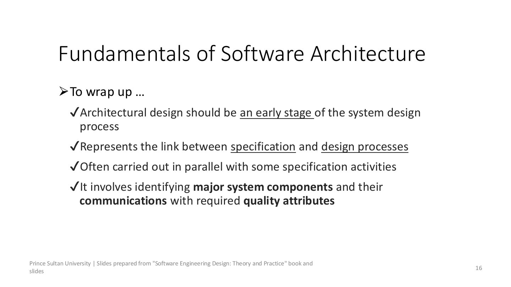
Architectural design is an early stage of system design.
It is the link between specification (requirements) and design.
It often runs in parallel with some specification activities: sketching an architecture helps discover and check requirements.
It identifies the major components, their communication and the quality attributes they must provide.
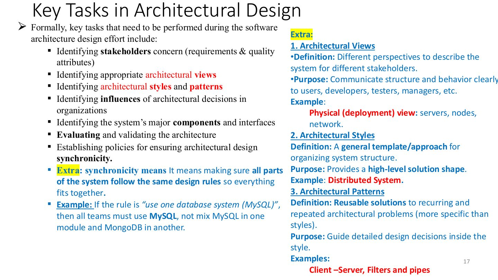
Identify stakeholders’ concerns: the requirements and quality attributes each stakeholder cares about (slides 18–23).
Identify appropriate architectural views: the different perspectives used to describe the system to different stakeholders, e.g. the physical (deployment) view of servers and network (slides 24–25).
Identify architectural styles and patterns. A style is a general template for organising a system (e.g. distributed system); a pattern is a more specific reusable solution to a recurring problem (client–server, pipes and filters).
Identify the influences of architectural decisions in organisations: their effect on budget, schedule and resources.
Identify the major components and interfaces.
Evaluate and validate the architecture (slide 27).
Establish policies for design synchronicity, so every part follows the same design rules. Example: if the rule is “one database system, MySQL”, no team quietly uses MongoDB in its module (slide 28).
List five of the key tasks in Architectural Design (the order is not important).
Any five of: identify stakeholders’ concerns (requirements and quality attributes); identify appropriate architectural views; identify architectural styles and patterns; identify organisational influences of architectural decisions (budget, schedule, resources); identify the system’s major components and interfaces; evaluate and validate the architecture; establish policies for design synchronicity.
Which FOUR of the following are key tasks performed during the Software Architecture Design effort? (Options included designing algorithms, unit testing, installing software, writing source code, budgeting and debugging.)
Identifying architectural styles and patterns; identifying appropriate architectural views; identifying the system’s major components and interfaces; identifying stakeholders’ concerns and quality attributes. Algorithms, unit tests, installation, maintenance, training, coding, budgets and debugging belong to other phases.
Which task is part of architectural design?
B. Identifying stakeholders’ concerns
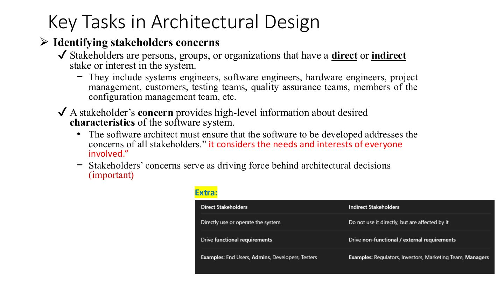
A stakeholder is any person, group or organisation with a direct or indirect stake in the system: systems, software and hardware engineers, project management, customers, testers, QA and configuration management, among others.
A stakeholder’s concern is high-level information about a characteristic they want the system to have (“it must never lose a payment”, “it must be easy to learn”). The architect must make sure the design addresses the concerns of all stakeholders.
Concerns are the driving force behind architectural decisions: the components and styles are chosen to satisfy them. The slide marks this as important.
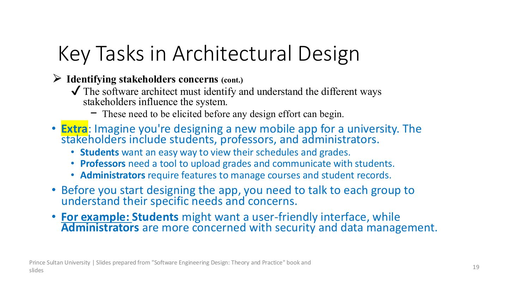
The architect must find out how each group of stakeholders influences the system, and those concerns must be elicited before any design begins. Designing first and asking later produces the wrong system.
University app example: students want to see schedules and grades easily, professors need to upload grades and message students, administrators need to manage courses and records.
Their concerns differ in kind, not just in features: students care about a user-friendly interface (usability), administrators about security and data management. Each concern points the architecture in a different direction.
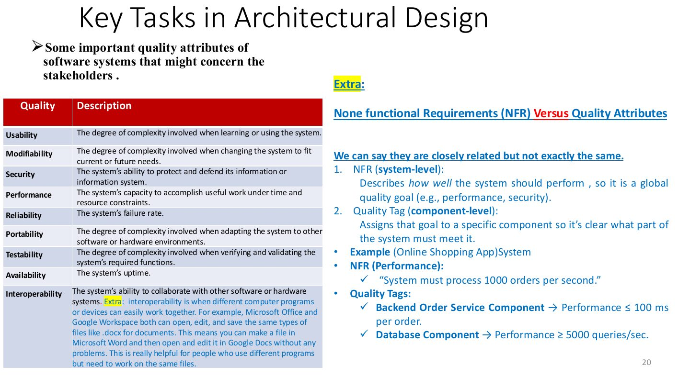
Quality attributes stakeholders worry about, read as “the degree of complexity involved” or “the system’s ability”. Usability: how hard it is to learn or use. Modifiability: how hard it is to change. Security: protecting information. Performance: useful work under time and resource limits. Reliability: the failure rate. Portability: how hard it is to move to other environments. Testability: how hard it is to verify.
Availability is the system’s uptime. Interoperability is its ability to work with other systems, e.g. Microsoft Office and Google Docs both opening the same .docx file.
NFR vs. quality attribute (Extra box): closely related but not identical. A non-functional requirement is a system-level goal (“the system must process 1000 orders per second”).
A quality tag assigns that goal to a specific component so it is clear which part must meet it (“backend order service ≤ 100 ms per order”, “database ≥ 5000 queries per second”).
List and define three of the major quality attributes of software architecture.
Any three, e.g. Availability: the system is ready to perform its task when needed (uptime). Performance: how quickly it responds to events, its capacity to do useful work under time and resource limits. Security: its ability to protect information and resist unauthorised access while serving legitimate users. Modifiability: the cost of changing it. Usability: how easy it is to learn and use. Testability: how easily its faults can be revealed by testing. (Chapter 3 treats these in depth.)
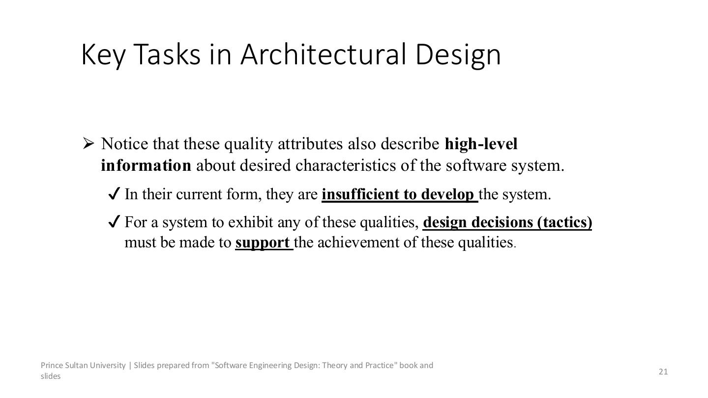
Quality attributes are, like concerns, high-level descriptions. “The system must be secure” is true and useless to a developer: in this form they are not enough to build anything.
To make a system actually exhibit a quality, the architect makes specific design decisions, called tactics: “authenticate every user”, “encrypt stored passwords”, “run two servers”. Tactics turn a wish into something buildable and checkable.
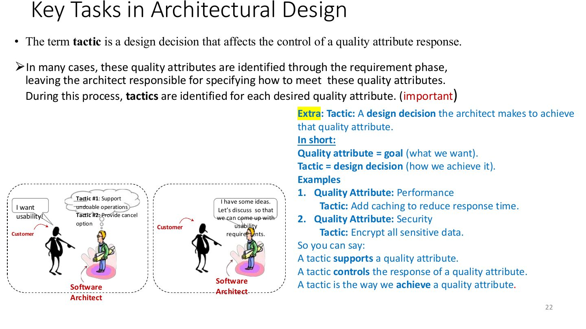
A tactic is a design decision that affects the control of a quality attribute response: it changes how the system responds in situations that matter for that quality (attack, overload, failure, change request).
Quality attributes are usually identified in the requirements phase. The architect’s job is to specify how to meet them, by choosing tactics for each desired quality. The slide marks this as important.
In short: the quality attribute is the goal (what we want); the tactic is the design decision (how we achieve it). A tactic supports, controls and achieves a quality attribute.
Examples: performance → add caching to reduce response time; security → encrypt all sensitive data; usability (from the cartoon) → support undo and provide a cancel option.
Fill in the blank: A design decision intended to influence or control the response associated with a quality attribute is called an architectural ___.
Tactic (singular; “tactics” was marked wrong).
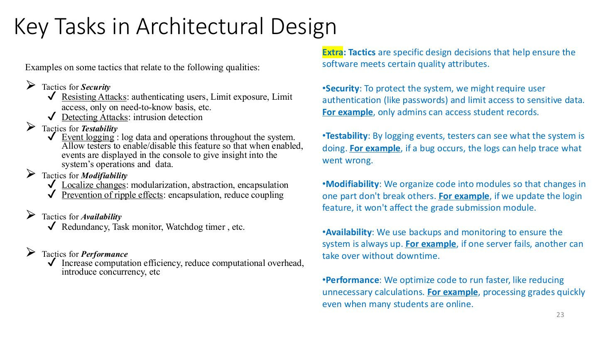
Security tactics: resist attacks (authenticate users, limit exposure, limit access on a need-to-know basis, e.g. only admins see student records) and detect attacks (intrusion detection).
Testability tactic: event logging. Log data and operations throughout the system, and let testers switch the logging on to see what the system is doing; when a bug appears, the log shows what led to it.
Modifiability tactics: localise changes (modularization, abstraction, encapsulation) and prevent ripple effects (encapsulation, reduce coupling). Updating the login feature then doesn’t touch grade submission. These are Chapter 1’s principles used as tactics.
Availability tactics: redundancy (a backup server takes over when one fails), task monitors, watchdog timers.
Performance tactics: increase computational efficiency, reduce computational overhead, introduce concurrency, so grades are processed quickly even when many students are online.
Name the quality attribute each tactic supports: (a) redundancy, (b) event logging, (c) intrusion detection, (d) reducing coupling.
(a) Availability. (b) Testability. (c) Security (detecting attacks). (d) Modifiability (preventing ripple effects).
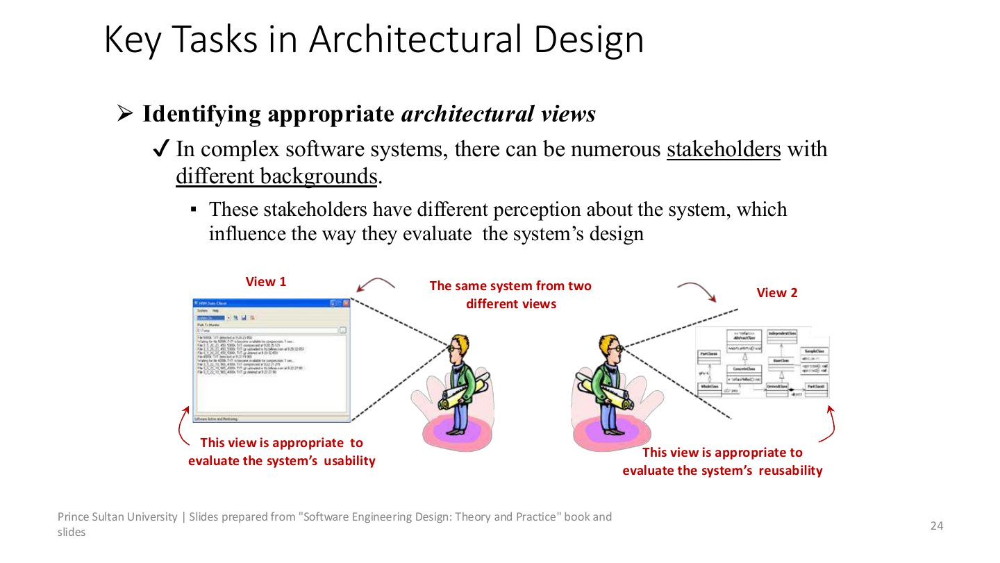
Complex systems have many stakeholders with different backgrounds.
Each has a different perception of the system, and that perception shapes how they evaluate its design.
The two pictures show the same system from two views: View 1 (the screens a user sees) is the right one to judge usability; View 2 (the internal components) is the right one to judge reusability. Neither view can answer the other’s question.
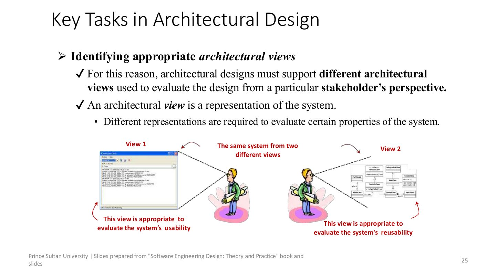
Hence architectural designs must support different architectural views, each used to evaluate the design from one stakeholder’s perspective.
An architectural view is a representation of the system: one focused picture of it. Different representations are needed to evaluate different properties (performance from a process view, deployment from a physical view). Lecture 3 introduces Kruchten’s 4+1 views.
Define an architectural view and explain why several are needed.
A view is a representation of the system from a particular stakeholder’s perspective. Several are needed because different properties (usability, reusability, performance, deployment) can only be evaluated from the representation that shows them, and stakeholders have different concerns.
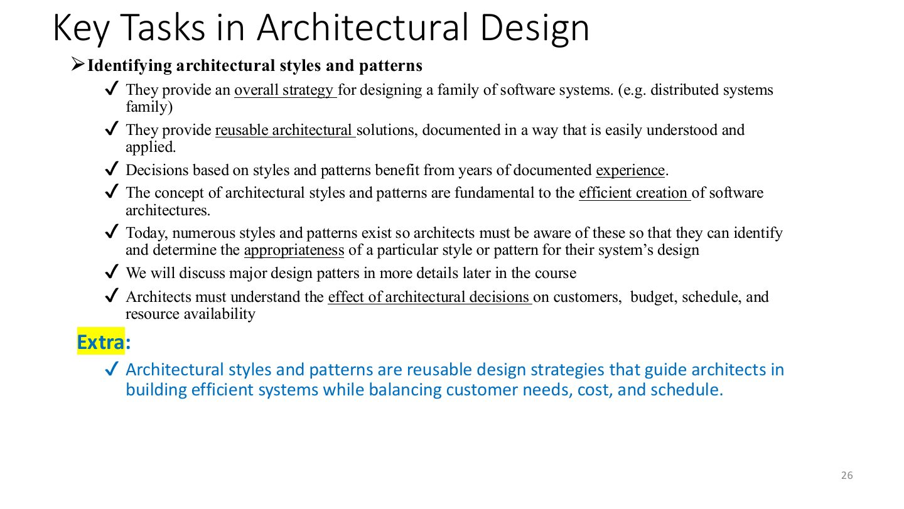
Architectural styles and patterns give an overall strategy for designing a whole family of systems (e.g. the family of distributed systems).
They are reusable solutions, documented so they are easy to understand and apply, and decisions based on them inherit years of documented experience instead of being invented from scratch.
Many exist, so the architect must know them well enough to judge the appropriateness of a style or pattern for a particular system. Chapter 4 covers the major ones.
Architects must also understand the effect of their choices on customers, budget, schedule and resource availability: a pattern can be technically right and still unaffordable.
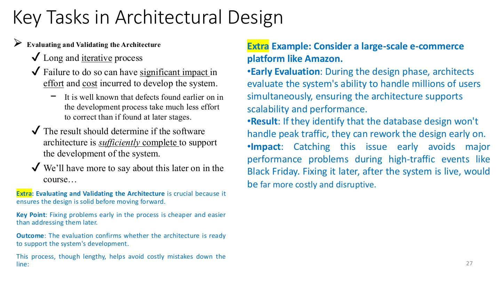
Evaluating and validating the architecture is a long and iterative process: evaluate, fix, evaluate again.
Skipping it has a large impact on effort and cost, because defects found early take much less effort to correct than the same defects found in code or after release.
The evaluation decides whether the architecture is sufficiently complete to support the development of the system.
Amazon-style example: during design, architects check whether the system can handle millions of simultaneous users. If the database design won’t survive peak traffic, they rework it now, not during Black Friday. Chapter 8 covers evaluation methods (ATAM).
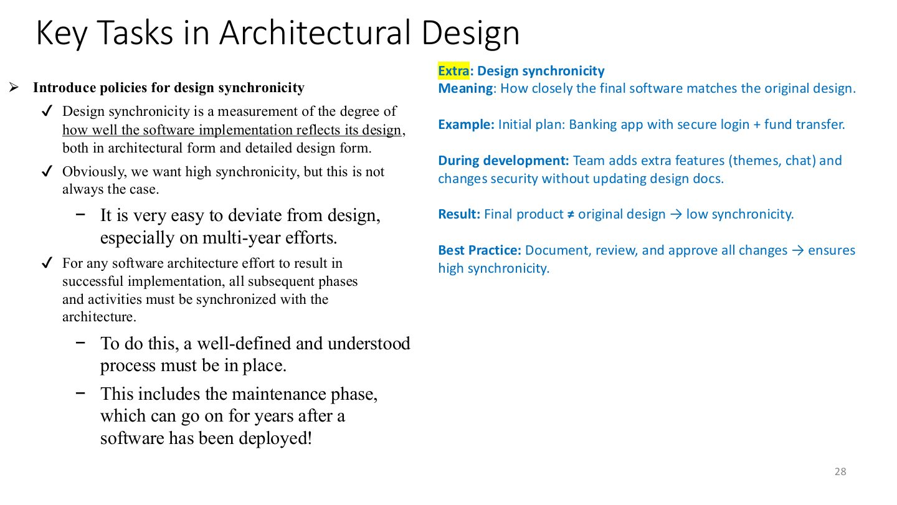
Design synchronicity measures how well the software implementation reflects its design, at both the architectural and the detailed level.
High synchronicity is the goal, but it is easy to deviate from the design, especially in multi-year projects where people, priorities and deadlines change.
Every phase after architecture must stay synchronised with it, which needs a well-defined, understood process. That includes maintenance, which can last for years after deployment.
Example: a banking app is designed with secure login and transfers; during development the team adds themes and chat and changes security without updating the design. The product no longer matches the design: low synchronicity. The cure is to document, review and approve every change.
Design synchronicity ensures that:
B. All phases stay aligned with architecture, especially implementation
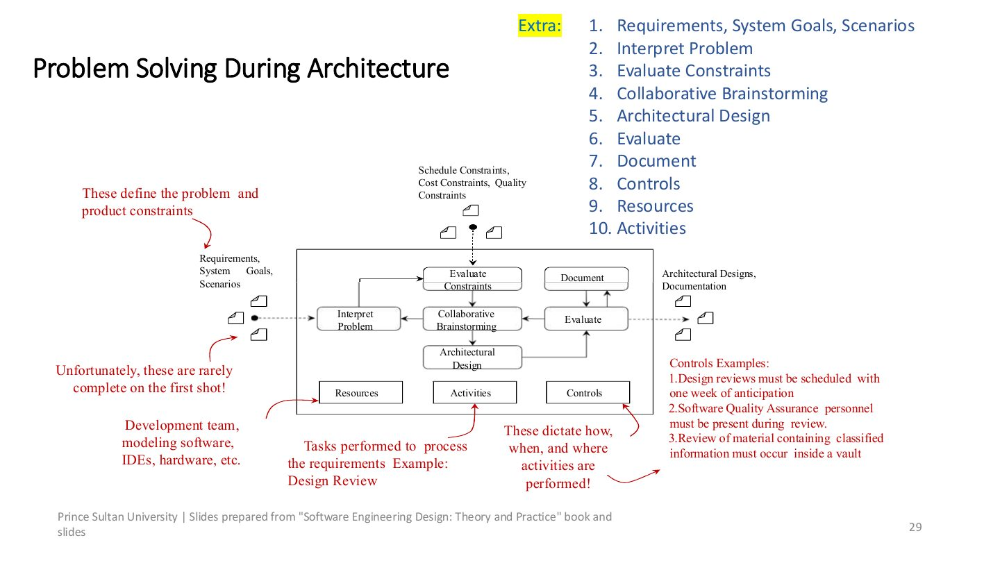
Chapter 1’s holistic problem-solving framework applied to architecture. Inputs (requirements, system goals, scenarios) define the problem, and the architect first interprets them. Requirements are rarely complete on the first try, so this step repeats.
Evaluate constraints: schedule, cost and quality constraints bound the solution.
Collaborative brainstorming produces candidate architectures, which are then evaluated.
The output is documented: architectural designs and their documentation.
The process runs on resources (the team, modelling software, IDEs, hardware) and is governed by controls, rules for how, when and where activities happen. Examples: design reviews scheduled a week ahead, QA staff present at reviews, classified material reviewed inside a vault.
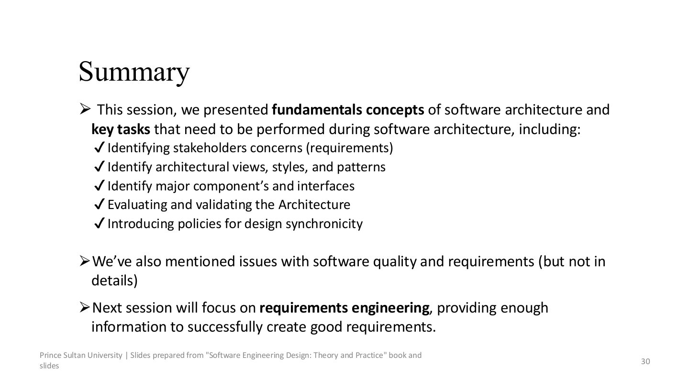
Summary of the fundamentals: architecture is the foundational activity that turns requirements into a collection of design elements describing the major components and their quality, to support detailed design.
The key tasks: identify stakeholder concerns; identify views, styles and patterns; identify major components and interfaces; evaluate and validate; introduce policies for design synchronicity.
The next lecture covers requirements engineering, because (slide 11) an architect can only translate requirements that are understood.